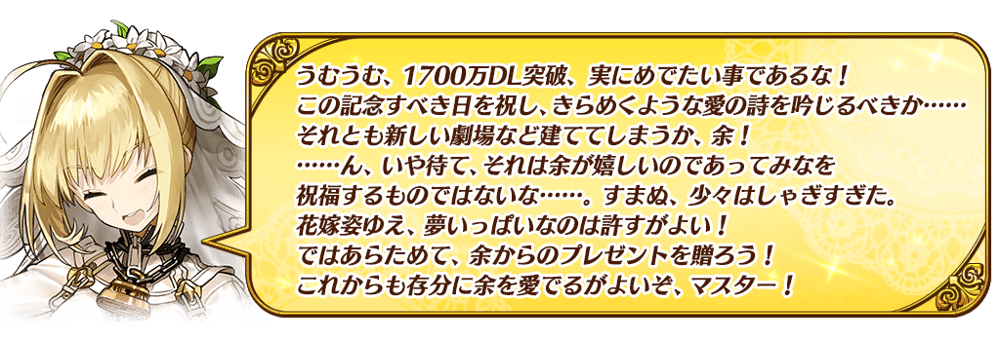
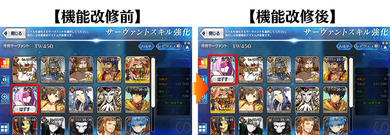

◆舉辦期間◆
2019年6月26日(三) 17:00～7月3日(三) 11:59
※本頁面皆為開發中圖片。會有與實際圖片相異的情況。

為了記念舉辦「1700萬DL突破宣傳活動」而實施特別連續登入獎勵。
在下述期間中，5天內連續登入的話，贈送呼符10張(聖晶石召喚10次份)等豪華報酬！
◆舉辦期間◆
2019年6月27日(四) 3:00～7月2日(二) 2:59
※在「1700萬DL突破宣傳活動」舉辦期間中預定實施維修。因此「1700萬DL突破記念特別連續登入獎勵」的舉辦期間為5天內實施，能以比目前為止「DL突破宣傳活動」更短期間的登入入手7天內份的報酬！
◆プレゼント對象◆
2019年7月1日(一) 2:59前通過「特異點F 炎上汙染都市 冬木」的御主對象
※上述時間前，在管理室(ターミナル)畫面的關卡橫幅必須要有「CLEAR」的文字顯示。
| 連續登入天數 | 贈送內容 |
|---|---|
| 第1天 | 叡智的猛火ALL★4(SR) 10張 |
| 第2天 | 1,000萬QP |
| 第3天 | 黃金果實 10個 白銀果實 10個 |
| 第4天 | 英靈結晶・星之芙芙ALL★3(HP) 10張 英靈結晶・太陽之芙芙ALL★3(ATK) 10張 |
| 第5天 | 呼符 10張(聖晶石召喚10次份) |
※登入獎勵會在每天AM3:00配發。 ※連續登入天數中斷後，無法領取之後的禮物。 ※最多能領取5次，但根據成為贈送對象的時間點，可能無法到此上。
在迦勒底之門內每日出現關卡「種火集め」的AP消耗量以期間限定變成1/2！
◆舉辦期間◆
2019年6月26日(三) 17:00～7月3日(三) 11:59
◆對象關卡◆
種火集め<槍・殺編>初級、中級、上級、超級
種火集め<剣・騎編>初級、中級、上級、超級
種火集め<弓・術編>初級、中級、上級、超級
種火集め<ランダム編>初級、中級、上級、超級
【種火集め 關卡的難易度等】
| 難易度 | 推薦Lv | 消耗AP | 初次通過報酬 |
|---|---|---|---|
| 初級 | 5 | 10→5 | 魔力稜鏡 1個 |
| 中級 | 10 | 20→10 | 魔力稜鏡 2個 |
| 上級 | 25 | 30→15 | 魔力稜鏡 3個 |
| 超級 | 40 | 40→20 | 魔力稜鏡 4個 |
※關卡通過報酬的魔力稜鏡只限初次通過時才可獲得。 ※關卡通過報酬的魔力稜鏡為每日重置。
◆曜日關卡 種火集め的攻略重點◆
参考攻略推薦職階組成隊伍，挑戰曜日關卡！

【曜日別種火集め關卡一覧】
| 星期 | 關卡名 | 做為戰利品可獲得的 主要道具 |
攻略推薦 職階 |
|---|---|---|---|
| 一 | 種火集め <槍・殺編> AP1/2
|
Lancer、Assassin、Berserker的經驗值卡 |  |
| 二 | 種火集め <剣・騎編> AP1/2
|
Saber、Rider、Berserker的經驗值卡 |  |
| 三 | 種火集め <弓・術編> AP1/2
|
Archer、Caster、Berserker的經驗值卡 |   |
| 四 | 種火集め <槍・殺編> AP1/2
|
Lancer、Assassin、Berserker的經驗值卡 | |
| 五 | 種火集め <剣・騎編> AP1/2
|
Saber、Rider、Berserker的經驗值卡 | |
| 六 | 種火集め <弓・術編> AP1/2
|
Archer、Caster、Berserker的經驗值卡 | |
| 日 | 種火集め <ランダム編> AP1/2
|
Saber、Archer、Lancer、Rider、Caster、Assassin、Berserker的經驗值卡(隨機) | - |
※Berserker在所有曜日關卡皆為有效職階。
下述的期間中，在「御主任務」的「限定」標籤內以期間限定追加「【1700萬DL突破記念】任務」。
通過所有任務的話，可得到最多350個魔力稜鏡與1個稀有稜鏡！
◆舉辦期間◆
2019年6月26日(三) 17:00～7月3日(三) 11:59
◆領取期間◆
2019年6月26日(三) 17:00～7月10日(三) 11:59
採用GoogleDrive資料夾呈現
◆追加任務◆
| 任務名稱 | 任務達成報酬 |
|---|---|
| 【1700萬DL突破記念】
靠戰利品收集3個『白色』道具 |
魔力稜鏡 50個 |
| 【1700萬DL突破記念】
靠戰利品收集3個『寶石』或『石』的道具 |
魔力稜鏡 50個 |
| 【1700萬DL突破記念】
擊倒3名持有『神性』特性的從者或敵人 |
魔力稜鏡 50個 |
| 【1700萬DL突破記念】
擊倒3位持有『羅馬』特性的從者 |
魔力稜鏡 50個 |
| 【1700萬DL突破記念】
擊倒3位『幸運A+以上』的從者 |
魔力稜鏡 50個 |
| 【1700萬DL突破記念】
擊倒3位持有『所愛之人』的從者 |
魔力稜鏡 50個 |
| 【1700萬DL突破記念】
通過3次『城』場景的自由關卡 |
魔力稜鏡 50個 |
| 【1700萬DL突破記念】
通過所有的任務 |
稀有稜鏡 1個 |
※請注意舉辦期間與領取期間有所差異。 ※請注意與每週日23:00更新的普通任務(Weekly)不同欄位，超過領取期間的話無法入手報酬。 ※就算達成「【1700萬DL突破記念】任務」，也不會計算在普通任務(Weekly)的任務進行度。 ※根據主線關卡的進行度會有無法達成「【1700萬DL突破記念】任務」的情況。

下述的期間中，所有關卡的友情點數獲得量變成2倍。 ◆舉辦期間◆ ◆對象關卡◆
將好友和跟隨的御主等做為支援能選擇從者和概念禮裝的編成列入考量，藉此機會入手更多友情點數吧
※做為支援選擇的從者是NPC從者的情況友情點數獲得量也是2倍
2019年6月26日(三) 17:00～7月3日(三) 11:59
包含自由關卡、強化關卡、幕間物語、曜日關卡等所有的關卡對象
下述的期間中，在進行從者及概念禮裝的強化時，大成功(經驗值2倍加成)・極大成功(經驗值3倍加成)發生機率以期間限定變成2倍！
務必藉此機會強化中意的從者和概念禮裝吧！
◆舉辦期間◆
2019年6月26日(三) 17:00～7月3日(三) 11:59
下述的期間中，在進行從者及概念禮裝的強化時所需的QP消耗量以期間限定變成1/2！
配合大成功・極大成功發生率2倍，別錯過這超值的機會！
◆舉辦期間◆
2019年6月26日(三) 17:00～7月3日(三) 11:59
※請注意從者技能強化、靈基再臨(從者進化)、絆等級上限開放、指令紋章刻印、從者寶具強化、聖杯轉臨、靈衣開放為對象外。
向所有的御主對象，以追加擴張「禮物箱的持有欄位」50欄位。
目前為止的300欄位擴張至持有欄位350欄位。
◆翻新實施時間◆
2019年6月26日(三) 17:00～
以期間限定在達文西工房的「稀有稜鏡交換」追加下述的道具。
◆道具交換期間◆
2019年6月26日(三) 17:00～7月3日(三) 11:59
| 追加道具 | 能交換次數 | 1次交換所需的 稀有稜鏡數 |
|---|---|---|
| 【期間限定】紋章移除器 | 3次 | 1個 |
| 【期間限定】傳承結晶 | 1次 | 5個 |
| 【期間限定】英靈結晶・流星之芙芙ALL★4(HP) | 1次 | 3個 |
| 【期間限定】英靈結晶・日輪之芙芙ALL★4(ATK) | 1次 | 3個 |
| 【期間限定】友情點數 20,000pt | 5次 | 1個 |
為了記念「1700萬DL突破宣傳活動」舉辦，在達文西工房的「稀有稜鏡交換」追加下述的新道具。
◆追加時間◆
2019年6月26日(三) 17:00～
◆追加道具(常駐)◆
「Fate/EXTELLA LINK」獲得關卡
| 追加道具 | 能交換次數 | 1次交換所需的 稀有稜鏡數 |
|---|---|---|
| 「Fate/EXTELLA LINK」獲得關卡 | 1次 | 3個 |
※追加到「稀有稜鏡交換」的「Fate/EXTELLA LINK」獲得關卡開放權做為常駐，沒有交換期限。 ※關於已經通過交換對象關卡的玩家，剩餘次數的顯示會是「0次」，無法交換。 ※在通過關卡入手的限定概念禮裝會是最大等級。 ※請注意「Fate/EXTELLA LINK」發售記念關卡沒有文字冒險部份。
介紹2019年6月26日(三)更新追加的新功能。
◆追加時間◆
2019年6月26日(三) 17:00～
絆禮裝修改為「靈基變還(販賣)・強化素材」的對象外
與從者的絆等級到達10後可獲得的報酬概念禮裝(絆禮裝)在「靈基變還(販賣)・強化」中，為了不被錯當成素材使用，變得無法做為素材選擇。
因此，概念禮裝的持有上限數計算不再包含絆禮裝的同時，向過去將絆禮裝在「靈基變還(販賣)・強化素材」中做為素材使用的各位玩家，對應返還對象概念禮裝。
智慧排序、挑選排序的改善
修改為就算智慧排序、挑選排序ON的狀態，選擇中的從者和概念禮裝也會排在前面。
因此，容易發現選擇中的從者和概念禮裝見，另外，更容易選擇「取下(はずす)」。

在概念禮裝強化畫面的篩選器追加「概念禮裝EXP卡」
概念禮裝強化畫面的素材選擇畫面，在篩選器追加「概念禮裝EXP卡」。
因此，更容易選擇概念禮裝的強化素材。
一部份讀取時間
為了縮短程式起動時的遊戲資料下載時間及戰鬥開始時的讀取時間進行一部份處理的最適化。透過此修改，變得可以更舒適地遊玩遊戲。
※最適化的效果，根據使用的裝置有所差異。敬請諒解。
其他還有，期間限定「1700萬DL記念Pick Up召喚」同時舉辦！
關於詳情，請自下述橫幅確認。
■「1700萬DL記念Pick Up召喚」詳細情報